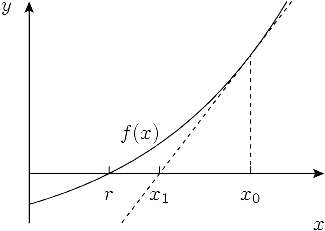

Reaching the maximum possible precision is rarely required from a practical algorithm. In real-world data, modeling and measurement errors are usually several orders of magnitude larger than the errors that come from rounding floating-point numbers and such, and we are often perfectly happy with picking an approximate method that trades off precision for speed.
In this section, we introduce one of the most important building blocks in such approximate, numerical algorithms: Newton’s method.
#Newton’s Method
Newton’s method is a simple yet very powerful algorithm for finding approximate roots of real-valued functions, that is, the solutions to the following generic equation:
$$ f(x) = 0 $$The only thing assumed about the function $f$ is that at least one root exists and that $f(x)$ is continuous and differentiable on the search interval. There are also some boring corner cases, but they almost never occur in practice, so we will just informally say that the function is “good.”
The main idea of the algorithm is to start with some initial approximation $x_0$ and then iteratively improve it by drawing the tangent to the graph of the function at $x = x_i$ and setting the next approximation $x_{i+1}$ equal to the $x$-coordinate of its intersection with the $x$-axis. The intuition is that if the function $f$ is “good” and $x_i$ is already close enough to the root, then $x_{i+1}$ will be even closer.

To obtain the point of intersection for $x_n$, we need to equal its tangent line function to zero:
$$ 0 = f(x_i) + (x_{i+1} - x_i) f'(x_i) $$ from which we derive $$ x_{i+1} = x_i - \frac{f(x_i)}{f'(x_i)} $$Newton’s method is very important: it is the basis of a wide range of optimization solvers in science and engineering.
#Square Root
As a simple example, let’s derive the algorithm for the problem of finding square roots:
$$ x = \sqrt n \iff x^2 = n \iff f(x) = x^2 - n = 0 $$ If we substitute $f(x) = x^2 - n$ into the generic formula above, we can obtain the following update rule: $$ x_{i+1} = x_i - \frac{x_i^2 - n}{2 x_i} = \frac{x_i + n / x_i}{2} $$In practice we also want to stop it as soon as it is close enough to the right answer, which we can simply check after each iteration:
const double EPS = 1e-9;
double sqrt(double n) {
double x = 1;
while (abs(x * x - n) > eps)
x = (x + n / x) / 2;
return x;
}
The algorithm converges for many functions, although it does so reliably and provably only for a certain subset of them (e.g., convex functions). Another question is how fast the convergence is, if it occurs.
#Rate of Convergence
Let’s run a few iterations of Newton’s method to find the square root of $2$, starting with $x_0 = 1$, and check how many digits it got correct after each iteration:
1.0000000000000000000000000000000000000000000000000000000000000 1.5000000000000000000000000000000000000000000000000000000000000 1.4166666666666666666666666666666666666666666666666666666666675 1.4142156862745098039215686274509803921568627450980392156862745 1.4142135623746899106262955788901349101165596221157440445849057 1.4142135623730950488016896235025302436149819257761974284982890 1.4142135623730950488016887242096980785696718753772340015610125 1.4142135623730950488016887242096980785696718753769480731766796
Looking carefully, we can see that the number of accurate digits approximately doubles on each iteration. This fantastic convergence rate is not a coincidence.
To analyze convergence rate quantitatively, we need to consider a small relative error $\delta_i$ on the $i$-th iteration and determine how much smaller the error $\delta_{i+1}$ is on the next iteration:
$$ |\delta_i| = \frac{|x_i - x|}{x} $$ We can express $x_i$ as $x \cdot (1 + \delta_i)$. Plugging it into the Newton iteration formula and dividing both sides by $x$ we get $$ 1 + \delta_{i+1} = \frac{1}{2} (1 + \delta_i + \frac{1}{1 + \delta_i}) = \frac{1}{2} (1 + \delta_i + 1 - \delta_i + \delta_i^2 + o(\delta_i^2)) = 1 + \frac{\delta_i^2}{2} + o(\delta_i^2) $$Here we have Taylor-expanded $(1 + \delta_i)^{-1}$ at $0$, using the assumption that the error $\delta_i$ is small (since the sequence converges, $|\delta_i| \ll 1$ for sufficiently large $i$).
Rearranging for $\delta_{i+1}$, we obtain
$$ \delta_{i+1} = \frac{\delta_i^2}{2} + o(\delta_i^2) $$which means that the error roughly squares (and halves) on each iteration once we are close to the solution. Since $-\log_{10}|\delta_i|$ is roughly the number of accurate significant digits in the answer $x_i$, squaring the relative error corresponds precisely to doubling the number of significant digits that we had observed.
This is known as quadratic convergence, and it is not limited to finding square roots. Let $e_i=x_i-x$ be the absolute error for Newton’s method applied to a function with root $x$. Taylor’s theorem shows that, for some $\xi_i$ between $x_i$ and $x$,
$$ |e_{i+1}| = \frac{|f^{\prime\prime}(\xi_i)|}{2 \cdot |f^\prime(x_i)|} \cdot |e_i|^2. $$If $f^\prime(x) \ne 0$ and $f^{\prime\prime}$ is continuous near the root, the factor remains bounded as $x_i \to x$, which gives quadratic convergence for a sufficiently close starting point.